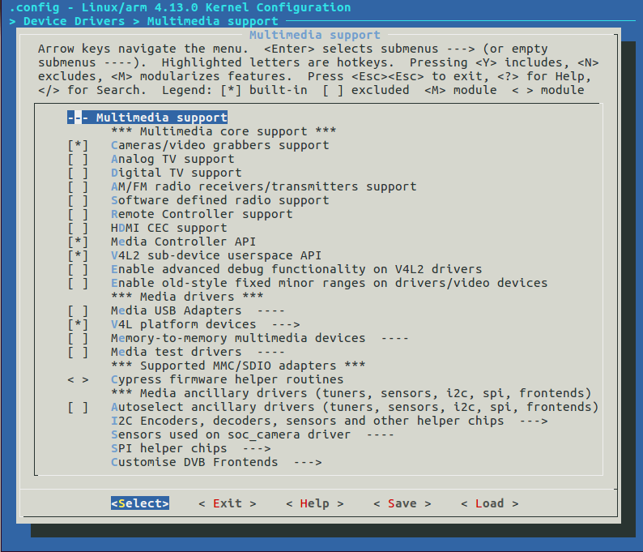
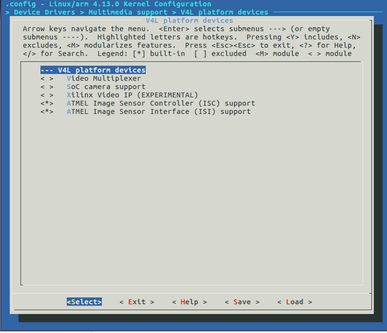
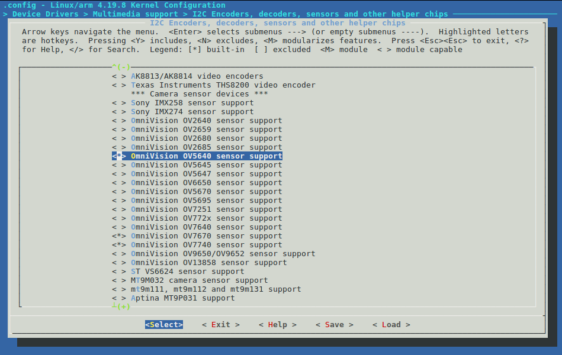
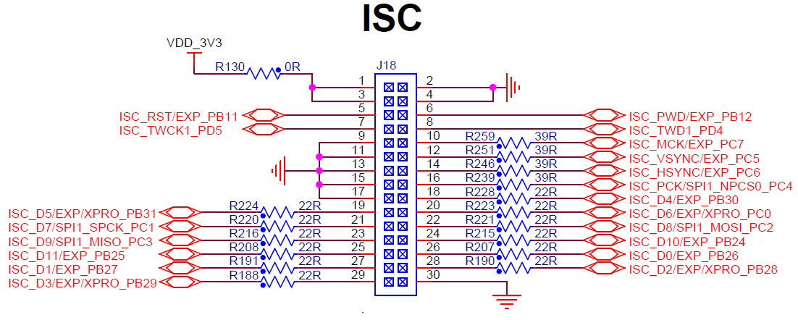
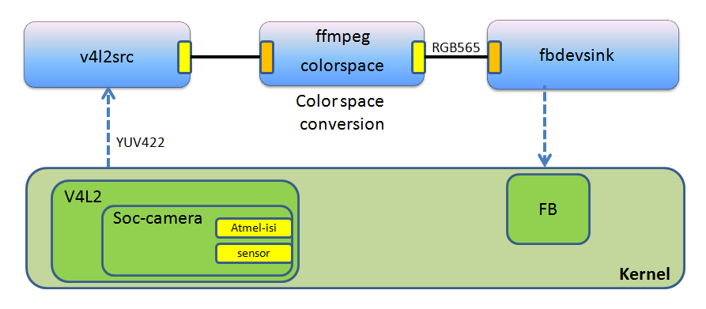

UsingISC (Image Sensor Controller)
Introduction
This page describes how to configure and use of the ISC in SAMA5D2 SoC with the image sensors.- The Image Sensor Controller(ISC) manages incoming data from a sensor up to 12-bit parallel interface.
- The ISC can generate the isc_mck output clock to the image sensor.
- The isc_mck clock has three selectable clock sources and one programmable clock divider.
- The ISC can handle pixel clock up to 96MHz, with the maximum resolution of 2592x1944.
- The ISC can generate the isc_mck output clock to the image sensor.
- The ISC includes a video pipeline consist of the following sub-modules:
- PFE: Parallel Front End to sample the camera sensor input stream
- WB: Programmable white balance in the Bayer domain
- CFA: Color filter array interpolation module
- CC: Programmable color correction
- GAM: Gamma correction
- CSC: Programmable color space conversion
- CBC: Contrast and Brightness control
- SUB: This module performs YCbCr444 to YCbCr420 chrominance subsampling
- RLP: This module performs rounding, range limiting and packing of the incoming data
- The sub-modules in video pipeline can handle the following input pixel formats:
- Raw Bayer convert to YCbCr
- YCbCr (YCbCr 444, YCbCr 422, YCbCr 420),
- Luminance (Black and White) Pixel Format.
- 16 bpp RGB, 32 bpp RGB, 16 bpp.
- For output format,
- For YCbCr output, the ISC includes a DMA interface which allows YCbCr data organized in packed, semi planar or planar format.
- It can also convert YCbCr to RGB.
- It can also be configured as by pass mode, to store original data received from the sensor.
Prerequisites
Advanced features
Configuration in kernel
The ISC driver in Linux kernel provides the upper layer interface to the Video4Linux (V4L2) framework. To make it work, you should enable the following options in Kernel menuconfig.- Enable V4L2 framework.
- Under the menu: "Device Drivers ---> Multimedia support"
- Select the menu "Device Drivers ---> Multimedia support ---> Media Controller API"
- Select the menu "Device Drivers ---> Multimedia support ---> V4L2 sub-device userspace API"
- Deselect the menu "Device Drivers ---> Multimedia support ---> Autoselect ancillary drivers (tuners, sensors, i2c, spi, frontends)"
- Under the menu: "Device Drivers ---> Multimedia support"
Enable ISC and sensor drivers
- Select device driver
- V4L platform device can be found in the menu: "Device Drivers ---> Multimedia support ---> V4L platform devices"
- Deselect the menu "Device Drivers ---> Multimedia support ---> V4L platform devices ---> SoC camera support"
- Select the menu "Device Drivers ---> Multimedia support ---> V4L platform devices ---> ATMEL Image Sensor Controller (ISC) support"
- V4L platform device can be found in the menu: "Device Drivers ---> Multimedia support ---> V4L platform devices"
- Select sensor driver
- Sensor drivers can be found in the menu "Device Drivers ---> Multimedia support ---> I2C Encoders, decoders, sensors and other helper chips "
 - We have tested with OV7670 , OV7740 and OV5640 image sensors. Starting with Linux4SAM 2020.04 we also tested with mt9v022
- Sensor drivers can be found in the menu "Device Drivers ---> Multimedia support ---> I2C Encoders, decoders, sensors and other helper chips "
Configuration in U-boot
Starting with Linux Kernel 4.14SAMA5D2 Xplained board
- Step 1: The boot command needs to have an additional overlay for the ISC controller itself. This is an additional FIT image overlay configuration:
bootm 0x24000000#kernel_dtb#isc
- Step 2: The boot command needs to have an additional overlay for the sensor. This is an additional FIT image overlay configuration:
bootm 0x24000000#kernel_dtb#isc#ov7670or
bootm 0x24000000#kernel_dtb#isc#ov7740or
bootm 0x24000000#kernel_dtb#isc#ov5640or
bootm 0x24000000#kernel_dtb#isc#mt9v022
| Overlay configuration | Effect | Requirements | Starting with Linux4SAM version | ||
| Image Sensor Controller | isc | Adds the Image Sensor Controller setup configuration | Base Kernel device Tree Blob 'kernel_dtb' configuration | Linux4SAM 6.0 | |
| Omnivision ov7670 | ov7670 | Adds the Omnivision ov7670 setup configuration | Base Kernel device Tree Blob 'kernel_dtb' configuration and 'isc' configuration | Linux4SAM 6.0 | |
| Omnivision ov7740 | ov7740 | Adds the Omnivision ov7740 setup configuration | Base Kernel device Tree Blob 'kernel_dtb' configuration and 'isc' configuration | Linux4SAM 6.0 | |
| Omnivision ov5640 | ov5640 | Adds the Omnivision ov5640 setup configuration | Base Kernel device Tree Blob 'kernel_dtb' configuration and 'isc' configuration | Linux4SAM 6.1 | |
| Aptina MT9V022 | mt9v022 | Adds the Aptina mt9v022 setup configuration | Base Kernel device Tree Blob 'kernel_dtb' configuration and 'isc' configuration | Linux4SAM 2020.04 | |
SAMA5D27 SOM1 EK board
- Step 1: The boot command needs to have an additional overlay for the sensor. This is an additional FIT image overlay configuration:
bootm 0x24000000#kernel_dtb#ov5640or
bootm 0x24000000#kernel_dtb#isc#mt9v022
| Overlay configuration | Effect | Requirements | Starting with Linux4SAM version | ||
| Omnivision ov5640 | ov5640 | Adds the Omnivision ov5640 setup configuration | Base Kernel device Tree Blob 'kernel_dtb' configuration | Linux4SAM 6.1 | |
| Aptina MT9V022 | mt9v022 | Adds the Aptina mt9v022 setup configuration | Base Kernel device Tree Blob 'kernel_dtb' configuration and 'isc' configuration | Linux4SAM 2020.04 | |
SAMA5D27 WLSOM1 EK board
bootm 0x24000000#kernel_dtb#isc
- Step 2: The boot command needs to have an additional overlay for the sensor. This is an additional FIT image overlay configuration:
bootm 0x24000000#kernel_dtb#isc#ov7670or
bootm 0x24000000#kernel_dtb#isc#ov7740or
bootm 0x24000000#kernel_dtb#isc#ov5640or
bootm 0x24000000#kernel_dtb#isc#mt9v022
| Overlay configuration | Effect | Requirements | Starting with Linux4SAM version | ||
| Image Sensor Controller | isc | Adds the Image Sensor Controller setup configuration | Base Kernel device Tree Blob 'kernel_dtb' configuration | Linux4SAM 6.2 | |
| Omnivision ov7670 | ov7670 | Adds the Omnivision ov7670 setup configuration | Base Kernel device Tree Blob 'kernel_dtb' configuration and 'isc' configuration | Linux4SAM 6.2 | |
| Omnivision ov7740 | ov7740 | Adds the Omnivision ov7740 setup configuration | Base Kernel device Tree Blob 'kernel_dtb' configuration and 'isc' configuration | Linux4SAM 6.2 | |
| Omnivision ov5640 | ov5640 | Adds the Omnivision ov5640 setup configuration | Base Kernel device Tree Blob 'kernel_dtb' configuration and 'isc' configuration | Linux4SAM 6.2 | |
| Aptina MT9V022 | mt9v022 | Adds the Aptina mt9v022 setup configuration | Base Kernel device Tree Blob 'kernel_dtb' configuration and 'isc' configuration | Linux4SAM 2020.04 | |
Connect the sensor to ISC
Hardware connection
 It uses two peripherals from SAMA5D2:
- ISC: The DVP interface consists of:
- Pixel Clock (VSYNC).
- Horizontal Sync (HSYNC).
- Vertical Sync (VSYNC).
- 8 to 12-bits parallel data interface
- TWI: an I2C interface to control the sensor's behavior.
- And reset and power down control of the sensor.
Connection specification in driver
The ISC driver uses the device tree to specify the ISC and sensor device, please refer to the binding document atmel-isc.txt- How the DVP interface of the sensor is connected to SAMA5D2.
- How the sensor's I2C control channel is connected to SAMA5D2.
- We should specify the sensor device under the I2C bus as a child node. (for example, the ov7670 must be connected under I2C1 on SAMA5D2 Xplained)
- At the same time, we need to specify the pins to control the sensor's reset and power down. (for example, PB11 as reset, PB12 as power down on SAMA5D2 Xplained).
- Pay attention to the conflicts with GPIOs. The Device Tree needs to disable the conflicting nodes.
reset-gpios = <&pioA 43 GPIO_ACTIVE_LOW>; powerdown-gpios = <&pioA 44 GPIO_ACTIVE_HIGH>;
The boot message
If everything is okay, you can see the log while the system boot-up, it indicates the ov7670 sensor successfully probed.ov7670 2-0021: chip found @ 0x42 (AT91)
Device file and sysfs
After boot up, you can see a character device file named /dev/video:root@sama5d2-xplained:/# ls -l /dev/video0 crw-rw---- 1 root video 81, 1 Jul 12 11:56 /dev/video0The more information is in the sysfs filesystem.
root@sama5d2-xplained:/# ls sys/class/video4linux/video0 dev dev_debug device index name power subsystem uevent root@sama5d2-xplained:/# cat /sys/class/video4linux/video0/name atmel_isc root@sama5d2-xplained:/# cat /sys/class/video4linux/v4l-subdev0/name ov7670 2-0021
User space software
Use the v4l-utils
The v4l-utils are a series of packages for handling the video4linux devices.
v4L2-compliance
You can use v4l2-compliance tool to test the v4l2 API compliance of the ISC driver.
# v4l2-compliance
v4l2-compliance SHA: 32cf495ff5da24df54936fae3bf0eb91fba77f3a, 32 bits
Compliance test for atmel_isc deviceatmev/video0:el_isc f0008000.isc: ================= START STATUS =================
atmel_isc f0008000.isc: Brightness: 0
atmel_isc f0008000.isc: Contrast: 256
atmel_isc f0008000.isc: Gamma: 2
Driver Info:
Driver name : atmel_isc
Card type : Atmel Image Sensor Controller
Bus info : platform:atmel_isc f0008000.isc
Driver version : 4.19.16
Capabilities : 0x84200001
Video Capture
Streaming
Extended Pix Format
Device Capabilities
Device Caps : 0x04200001
Video Capture
Streaming
Extended Pix Format
Required ioctls:
test VIDIOC_QUERYCAP: OK
Allow for multiple opens:
test second /dev/video0 open: OK
test VIDIOC_QUERYCAP: OK
test VIDIOC_G/S_PRIORITY: OK
test for unlimited opens: OK
Debug ioctls:
test VIDIOC_DBG_G/S_REGISTER: OK (Not Supported)
atmel_isc f0008000.isc: White Balance, Automatic: true
atmel_isc f0008000.isc: ================== END STATUS ==================
test VIDIOC_LOG_STATUS: OK
Input ioctls:
test VIDIOC_G/S_TUNER/ENUM_FREQ_BANDS: OK (Not Supported)
test VIDIOC_G/S_FREQUENCY: OK (Not Supported)
test VIDIOC_S_HW_FREQ_SEEK: OK (Not Supported)
test VIDIOC_ENUMAUDIO: OK (Not Supported)
test VIDIOC_G/S/ENUMINPUT: OK
test VIDIOC_G/S_AUDIO: OK (Not Supported)
Inputs: 1 Audio Inputs: 0 Tuners: 0
Output ioctls:
test VIDIOC_G/S_MODULATOR: OK (Not Supported)
test VIDIOC_G/S_FREQUENCY: OK (Not Supported)
test VIDIOC_ENUMAUDOUT: OK (Not Supported)
test VIDIOC_G/S/ENUMOUTPUT: OK (Not Supported)
test VIDIOC_G/S_AUDOUT: OK (Not Supported)
Outputs: 0 Audio Outputs: 0 Modulators: 0
Input/Output configuration ioctls:
test VIDIOC_ENUM/G/S/QUERY_STD: OK (Not Supported)
test VIDIOC_ENUM/G/S/QUERY_DV_TIMINGS: OK (Not Supported)
test VIDIOC_DV_TIMINGS_CAP: OK (Not Supported)
test VIDIOC_G/S_EDID: OK (Not Supported)
Control ioctls (Input 0):
test VIDIOC_QUERY_EXT_CTRL/QUERYMENU: OK
test VIDIOC_QUERYCTRL: OK
test VIDIOC_G/S_CTRL: OK
test VIDIOC_G/S/TRY_EXT_CTRLS: OK
test VIDIOC_(UN)SUBSCRIBE_EVENT/DQEVENT: OK
test VIDIOC_G/S_JPEGCOMP: OK (Not Supported)
Standard Controls: 6 Private Controls: 0
Format ioctls (Input 0):
test VIDIOC_ENUM_FMT/FRAMESIZES/FRAMEINTERVALS: OK
test VIDIOC_G/S_PARM: OK
test VIDIOC_G_FBUF: OK (Not Supported)
test VIDIOC_G_FMT: OK
test VIDIOC_TRY_FMT: OK
test VIDIOC_S_FMT: OK
test VIDIOC_G_SLICED_VBI_CAP: OK (Not Supported)
test Cropping: OK (Not Supported)
test Composing: OK (Not Supported)
test Scaling: OK (Not Supported)
Codec ioctls (Input 0):
test VIDIOC_(TRY_)ENCODER_CMD: OK (Not Supported)
test VIDIOC_G_ENC_INDEX: OK (Not Supported)
test VIDIOC_(TRY_)DECODER_CMD: OK (Not Supported)
Buffer ioctls (Input 0):
test VIDIOC_REQBUFS/CREATE_BUFS/QUERYBUF: OK
test VIDIOC_EXPBUF: OK
test Requests: OK (Not Supported)
Total for atmel_isc device /dev/video0: 44, Succeeded: 44, Failed: 0, Warnings: 0
v4l2-ctl
- Display all information available.
# v4l2-ctl --all
Driver Info:
Driver name : atmel_isc
Card type : Atmel Image Sensor Controller
Bus info : platform:atmel_isc f0008000.isc
Driver version : 4.19.16
Capabilities : 0x84200001
Video Capture
Streaming
Extended Pix Format
Device Capabilities
Device Caps : 0x04200001
Video Capture
Streaming
Extended Pix Format
Priority: 2
Video input : 0 (Camera: ok)
Format Video Capture:
Width/Height : 640/480
Pixel Format : 'BA81' (8-bit Bayer BGBG/GRGR)
Field : None
Bytes per Line : 1280
Size Image : 614400
Colorspace : sRGB
Transfer Function : Default (maps to sRGB)
YCbCr/HSV Encoding: Default (maps to ITU-R 601)
Quantization : Default (maps to Full Range)
Flags :
Streaming Parameters Video Capture:
Capabilities : timeperframe
Frames per second: 24.000 (24/1)
Read buffers : 0
User Controls
brightness 0x00980900 (int) : min=-1024 max=1023 step=1 default=0 value=0 flags=slider
contrast 0x00980901 (int) : min=-2048 max=2047 step=1 default=256 value=256 flags=slider
white_balance_automatic 0x0098090c (bool) : default=1 value=1
do_white_balance 0x0098090d (button) : flags=inactive, write-only, execute-on-write
gamma 0x00980910 (int) : min=0 max=2 step=1 default=2 value=2 flags=slider
- Disaplay supported video formats.
# v4l2-ctl --list-formats
ioctl: VIDIOC_ENUM_FMT
Type: Video Capture
[0]: 'AR12' (16-bit ARGB 4-4-4-4)
[1]: 'AR15' (16-bit ARGB 1-5-5-5)
[2]: 'RGBP' (16-bit RGB 5-6-5)
[3]: 'AR24' (32-bit BGRA 8-8-8-8)
[4]: 'XR24' (32-bit BGRX 8-8-8-8)
[5]: 'YU12' (Planar YUV 4:2:0)
[6]: 'YUYV' (YUYV 4:2:2)
[7]: '422P' (Planar YUV 4:2:2)
[8]: 'GREY' (8-bit Greyscale)
[9]: 'BA81' (8-bit Bayer BGBG/GRGR)
- Display all controls and their values
# v4l2-ctl --list-ctrls
User Controls
brightness 0x00980900 (int) : min=-1024 max=1023 step=1 default=0 value=0 flags=slider
contrast 0x00980901 (int) : min=-2048 max=2047 step=1 default=256 value=256 flags=slider
white_balance_automatic 0x0098090c (bool) : default=1 value=1
do_white_balance 0x0098090d (button) : flags=inactive, write-only, execute-on-write
gamma 0x00980910 (int) : min=0 max=2 step=1 default=2 value=2 flags=slider
- Get / Set the value of the controls
root@sama5d2-xplained:/# v4l2-ctl --get-ctrl=contrast contrast: 256 root@sama5d2-xplained:/# v4l2-ctl --set-ctrl=contrast=200 root@sama5d2-xplained:/# v4l2-ctl --get-ctrl=contrast contrast: 200
Other applications
The user space application for ISC is quite similar to ISI, we just include it from UsingISI page. fswebcam
fswebcam is a neat and simple webcam app. It captures images from a V4L1/V4L2 compatible device or file, averages them to reduce noise and draws a caption using the GD Graphics Library which also handles compressing the image to PNG or JPEG. The resulting image is saved to a file or sent to stdio where it can be piped to something like ncftpput or scp.
- Add fswebcam in Buildroot
- Select
"Package Selection for the target -> Graphic libraries and applications -> fswebcam".
- Select
- Use fswebcam to capture a image.
#!/bin/sh VIDEO_DEV=/dev/video0 SKIP_FRAMES=20 # test preview channel fswebcam -S ${SKIP_FRAMES} -d ${VIDEO_DEV} -p RGB565 -r 640x480 rgb565.jpg fswebcam -S ${SKIP_FRAMES} -d ${VIDEO_DEV} -p RGB565 -r 320x240 rgb565_defactor.jpg # test codec channel fswebcam -S ${SKIP_FRAMES} -d ${VIDEO_DEV} -p YUYV -r 640x480 yuyv.jpg fswebcam -S ${SKIP_FRAMES} -d ${VIDEO_DEV} -p YUYV -r 800x600 yuyv_800x600.jpg fswebcam -S ${SKIP_FRAMES} -d ${VIDEO_DEV} -p UYVY -r 640x480 uyvy.jpg fswebcam -S ${SKIP_FRAMES} -d ${VIDEO_DEV} -p UYVY -r 800x600 uyvy_800x600.jpg # test codec channel, without any processing, GREY, or Bayer RGB. fswebcam -S ${SKIP_FRAMES} -d ${VIDEO_DEV} -p BAYER -r 640x480 bayer_bggr8.jpg fswebcam -S ${SKIP_FRAMES} -d ${VIDEO_DEV} -p SGRBG8 -r 640x480 bayer_grbg8.jpg-
-S: frames that need to skip. -
-d /dev/video0: specify the ISI as the input source. -
-p: pixel format, can be RGB565, YUYV, UYVY, BAYER, SGRBGB8 and etc. -
-r: resolution.
-
FFmpeg
FFmpeg is a complete, cross-platform solution to record, convert and stream audio and video. It supports video4linux2 in Linux.
- Add FFmpeg in Buildroot (It's already included in the Linux4SAM buildroot demo).
- Select
"Package Selection for the target -> Audio and video applications -> ffmpeg".
- Select
- Use FFmpeg to capture a mpeg4 video clip.
ffmpeg -r 25 -s vga -t 20 -pix_fmt yuyv422 -f video4linux2 -i /dev/video0 video.avi
-
-r: frame rate -
-s: resolution, it can beqcif, cif, qvga, vga, svga, xga, uxga. -
-t: time duration in second. -
-pix_fmt: pixel format, only support yuyv422. -
-f video4linux2: specify the format. Useffmpeg -formatswill show all supported formats. -
-i /dev/video0: specify the ISI as the input source. Run following command to check the source name:# cat /sys/class/video4linux/video0/name isi-camera -
video.avi: output video file name
-
vcodec specified, it use mpeg4 as default.
ffmpeg -pix_fmts can show all the supported pixel formats.
- Use FFmpeg application to capture images.
ffmpeg -f video4linux2 -r 1 -s vga -t 4 -i /dev/video0 -pix_fmt yuyv422 -f image2 -vcodec png image%d.png
-
-r: frame rate -
-s: resolution, it can beqcif, cif, qvga, vga, svga, xga, uxga. -
-t: time duration in second. -
-i /dev/video0: specify the ISI as the input source. Run following command to check the source name:# cat /sys/class/video4linux/video0/name isi-camera -
-pix_fmt: pixel format, only support yuyv422. -
-f image2: image2 sequence format. Useffmpeg -formatswill show all supported formats. -
-vcodec png: specify output format is png. Useffmpeg -codecswill show all supported codec. -
image%d.png: output file name is image1.png, image2.png and etc.
-
GStreamer
GStreamer is a library for constructing graphs of media-handling components. The applications it supports range from simple Ogg/Vorbis playback, audio/video streaming to complex audio (mixing) and video (non-linear editing) processing.
GStreamer has been ported to a wide range of operating systems, processors and compilers.
- Add GStreamer in Buildroot (It's already included in the Linux4SAM Buildroot demo).
- Select
"Package Selection for the target -> Audio and video applications -> gstreamer"and the plugins that you needed.
- Select
- Use GStreamer to preview on LCD.
# gstreamer 0.10 gst-launch v4l2src device="/dev/video1" ! video/x-raw-yuv,width=640,height=480 ! ffmpegcolorspace ! fbdevsink # gstreamer 1.0 gst-launch-1.0 v4l2src device="/dev/video1" ! video/x-raw,width=640,height=480 ! videoconvert ! fbdevsink
-
v4l2src: a plugin to support v4l2 device as a source-
device="/dev/video1": specify the ISI as the v4l2 input device.- You can check the device name by run command:
cat /sys/class/video4linux/video1/name
- You can check the device name by run command:
-
video/x-raw-yuv,width=640,height=480: For gstreamer 0.10, specify the v4l2 output video format and size. -
video/x-raw,width=640,height=480: For gstreamer 1.0, specify the v4l2 output video format and size.
-
-
ffmpegcolorspaceorvideoconvert: a plugin to convert from one color space to another -
fbdevsink: a plugin to render to framebuffer device
-
gst-inspect will show all installed plugins.
gst-inspect [plugin name] will show all supported parameters for this plugins.
- 
ZXing barcode reader
ZXing is an open-source, multi-format 1D/2D barcode image processing library implemented in Java, with ports to other languages. The project also includes a barcode reader example.- Add the ZXing barcode reader application in Buildroot.
- Add ZXing libary in Buildroot (The Linux4SAM buildroot demo already include it).
- Select
"Package Selection for the target -> Libraries -> Graphics -> zxing".
- Select
- Apply attached patch on top of the buildroot-2012.11.1-at91.
- This patch will change the zxing project's Makefile to generate not only zxing library but also the barcode reader example.
- Run command
make zxingto generate the barcode application:zxing_barcode.-
zxing_barcodeis located onoutpout/target/use/bin/.
-
- Add ZXing libary in Buildroot (The Linux4SAM buildroot demo already include it).
- Read barcode from the image by using ZXing barcode reader.
- Get an picture which include a barcode.
- Please refer to FFmpeg section for the image capture.
- Run following command to reader the barcode.
zxing_barcode *.jpg
- Get an picture which include a barcode.
| WebFaqBaseForm | |
|---|---|
| Boards | Sama5d27WLSom1EK, Sama5d27Som1EK, Sama5d2Xplained |
| Components | Kernel, linux-4.9-at91, linux-4.14-at91, linux-4.19-at91, linux-5.4-at91 |
| Summary | How to use the Image Sensor Controller |


| I | Attachment | Action | Size | Date | Who | Comment |
|---|---|---|---|---|---|---|
| |
Screenshot_from_2019-04-23_14-01-23.png | manage | 105.2 K | 2019-04-23 - 11:06 | EugenHristev |
r17 - 02 Jun 2020 - 06:22:33 - EugenHristev

{kind=link}
{kind=link}
Copyright © by the contributing authors. All material on this collaboration platform is the property of the contributing authors.
Linux® is the registered trademark of Linus Torvalds in the U.S. and other countries.
Microchip® and others, are registered trademarks or trademarks of Microchip Technology Inc. and its subsidiaries. 
Arm® and others are registered trademarks or trademarks of Arm Limited (or its affiliates). Other terms and product names may be trademarks of others.
Ideas, requests, contributions ? Connect to LinksToCommunities page.